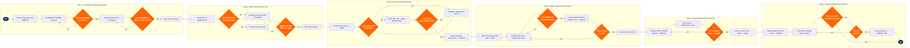

Flight Dispatch & Release
Flight Operations › Flight Dispatch & Control · 20 L4 steps · 6 phases · 4 decision gates · Updated 2026-10-02 00:53
📊
Process Flow Diagram (BPMN)

📋
L4 Process Steps
| Step | Step Name | Role / Swim Lane | System | Input | Output | KPI | Dec? | Exc? |
|---|---|---|---|---|---|---|---|---|
Phase 1 1.1 |
Retrieve active flight plan from flight planning system | Airline Dispatcher | NAVBLUE | Scheduled departure, route database, aircraft tail assignment | Draft Operational Flight Plan (OFP) with route, altitude, and estimated fuel | Flight plan available ≥60 min before STD; plan accuracy within ±2% of actual fuel burn | N | N |
| 1.2 | Pull METAR, TAF, SIGMET and PIREP weather data | Airline Dispatcher | Honeywell GoDirect Weather | Departure, destination, and alternate ICAO codes; planned departure time | Consolidated weather package including en-route SIGMET and PIREP overlays | Weather package delivered ≤45 min before STD; SIGMET currency ≤6 hrs | N | N |
| 1.3 | Assess weather at origin, destination and alternate | Airline Dispatcher | Honeywell GoDirect Weather | Weather package, airline published operating minima, alternate requirements | Weather go/no-go recommendation with alternate aerodrome confirmed | Destination forecast visibility and ceiling at or above published CAT I/II/III minima at ETA | Y | Y |
| 1.4 | Calculate fuel uplift including contingency and alternate | Airline Dispatcher | NAVBLUE | Route fuel burn, wind data, alternate distance, company fuel policy, EDCT delay estimate | Minimum regulatory fuel figure plus discretionary uplift recommendation | Planned fuel ≥ FAR 121.645 / ICAO Annex 6 minimum (trip + 5% contingency + alternate + 30 min final reserve); fuel overage ≤3% of trip fuel | Y | Y |
Phase 2 2.1 |
File IFR flight plan with ATC via AFTN/SITA | Airline Dispatcher | NAVBLUE + SITA ACARS / Telex | Finalized OFP route, departure time, aircraft type and registration, SELCAL | Filed FPL message (ICAO format) acknowledged by ATC; filing receipt stored | Flight plan filed ≥30 min before EOBT; filing acknowledgment received ≤5 min | N | Y |
| 2.2 | Confirm ATC slot/EDCT and assess crew duty impact | Airline Dispatcher | NAVBLUE + FAA TFMS / EUROCONTROL NMOC | Filed FPL, GDP/AFP program data, crew duty time records from Jeppesen Crew Management | Confirmed CTOT/EDCT, updated STD, crew duty compliance confirmation | EDCT compliance rate ≥98%; crew duty limit breach rate <0.5% of dispatched flights | Y | Y |
| 2.3 | Select and file alternate aerodrome with fuel coverage | Airline Dispatcher | NAVBLUE | Destination TAF, alternate airport ops and NOTAM status, fuel range envelope | Filed alternate ICAO code with calculated alternate fuel and regulatory compliance confirmed | Alternate meets FAR 121.619 one-hour TAF forecast above alternate minima at ETA ±1 hr | Y | Y |
Phase 3 3.1 |
Check aircraft airworthiness status in MRO system | Airline Dispatcher / Maintenance Controller | AMOS by Swiss AviationSoftware | Tail number, scheduled departure, inbound tech log entries | Airworthiness confirmation or open deferred defect list with MEL references | Aircraft status confirmed ≥90 min before STD; zero open airworthiness directives beyond MEL tolerance | N | Y |
| 3.2 | Review MEL and CDL items for dispatch acceptability | Airline Dispatcher / Maintenance Controller | AMOS by Swiss AviationSoftware + Boeing Toolbox | Open deferred defects, current MEL/CDL revision, route and operating conditions | MEL dispatch determination (go/no-go) with any operational restrictions documented | MEL review completed ≤60 min before STD; zero dispatches with expired MEL interval items | N | Y |
| 3.3 | Verify V-speeds and performance for current configuration | Airline Dispatcher | Jeppesen FliteDeck Performance | Aircraft weight, MEL-driven configuration restrictions, runway condition report (SNOWTAM/RCR) | Confirmed V1/VR/V2, flap setting, derate selection, and balanced field length | Performance calculations completed ≤45 min before STD; all V-speeds within aircraft flight manual limits | N | Y |
Phase 4 4.1 |
Receive preliminary load figures from load control | Airline Dispatcher | Amadeus Altéa PSS (Load Control module) | Booked passenger count, checked baggage manifest, cargo booking, crew count | Preliminary Zero Fuel Weight (ZFW) and estimated Takeoff Weight (TOW) | Preliminary load sheet received ≥60 min before STD; ZFW variance from final ≤500 lbs | N | Y |
| 4.2 | Calculate final takeoff weight and CG envelope | Load Controller | Amadeus Altéa PSS (Load Control module) | Final passenger count, actual baggage weights by zone, hold cargo manifest, ballast | Final load sheet with confirmed TOW, ZFW, CG position as percentage of MAC | CG within ±2% MAC of certified envelope limits; TOW ≤ MTOW; load sheet issued ≤40 min before STD | N | Y |
| 4.3 | Perform runway-limited weight and obstacle clearance check | Airline Dispatcher | Jeppesen FliteDeck Performance | Final TOW, runway conditions, OAT, pressure altitude, obstacle departure procedure | Confirmed Regulated Takeoff Weight (RTOW), required field length, net takeoff flight path | Net takeoff flight path clears obstacles by ≥35 ft per FAR 121.189; RTOW ≥ actual TOW | N | Y |
Phase 5 5.1 |
Generate Operational Flight Plan and dispatch release | Airline Dispatcher | NAVBLUE | Final fuel uplift, confirmed load sheet, MEL notes, weather package, NOTAM summary | Completed Operational Flight Plan (OFP) and unsigned Dispatch Release document | OFP issued ≥30 min before EOBT; NOTAM safety-critical items highlighted in release | N | N |
| 5.2 | Brief Captain on route, weather, NOTAMs and MEL status | Airline Dispatcher | SITA ACARS / Telex (or face-to-face at hub) | OFP, weather package, NOTAM summary, MEL items, EDCT/CTOT, fuel figure | Completed crew briefing record with dispatcher and captain acknowledgement | Crew briefing completed ≥20 min before EOBT; briefing acknowledgment logged in dispatch system | N | Y |
| 5.3 | Captain reviews and co-signs Dispatch Release (FAR 121.663) | Captain (PIC) | SITA ACARS (electronic signature) or paper release | Dispatch Release document, OFP, fuel order, weather and NOTAM briefing package | Dual-signed Dispatch Release (dispatcher + captain) confirming joint airworthiness decision | Release co-signed ≤15 min before EOBT; 100% of departures have dual-signed release on file | N | Y |
| 5.4 | Issue final dispatch release and transmit to crew | Airline Dispatcher | NAVBLUE + SITA ACARS | Co-signed Dispatch Release, confirmed fuel order, updated departure time | Transmitted final release; flight authorized to depart; release archived in dispatch system | Release transmitted ≥10 min before EOBT; 100% compliance; ACARS delivery confirmation within 2 min | N | Y |
Phase 6 6.1 |
Monitor departure, pushback and initial climb confirmation | Airline Dispatcher | SITA Airport Management System (AMS) | ATC off-blocks clearance, pushback notification from ramp, ACARS OUT message | Confirmed actual off-blocks time (AOBT); flight tracker status updated to airborne | AOBT recorded within 2 min of actual event; D0 (on-time departure) target ≥78% | N | N |
| 6.2 | Track flight en-route via ACARS position reports | Airline Dispatcher | SITA ACARS + NAVBLUE | Automatic ACARS position reports (15-min intervals), ATC radar handoff confirmations | Updated ETA, fuel-remaining trend, en-route deviation log, revised destination weather check | Position report gap ≤15 min; fuel remaining vs. plan within ±500 lbs at each waypoint | N | Y |
| 6.3 | Initiate diversion or emergency response if required | Airline Dispatcher / SOC Controller | NAVBLUE + SITA AMS + Jeppesen FliteDeck | In-flight emergency notification, medical diversion request, fuel emergency, weather deterioration below minima | Diversion airport selected with fuel coverage confirmed; ATC coordination initiated; ground support activated at diversion airport | Diversion decision communicated to crew ≤5 min from trigger event; ground support activated ≤15 min before ETA at diversion | N | Y |
📋